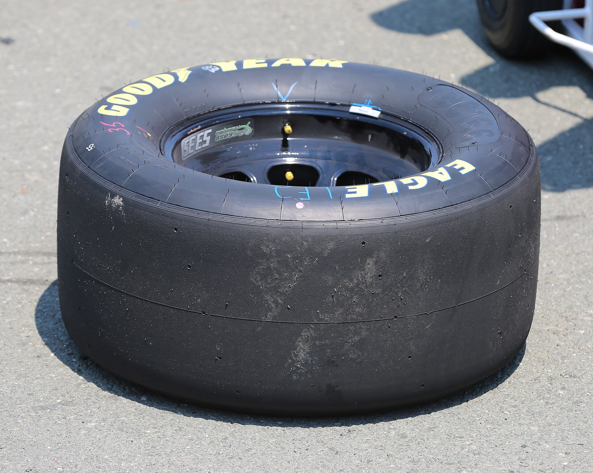

Reduce unnecessary sliding
Large steering corrections, wheelspin, and locked tires scrub speed and can build heat. Aim for one smooth input at a time; if the car slides, recover calmly and avoid repeating the same aggressive correction.
07 / LONG-RUN PACE
Tire management is about keeping grip consistent across a run, not driving slowly or avoiding every curb. Sliding, locking a tire, spinning the wheels, and repeated sharp inputs can add heat or wear in many simulators. The exact model differs by game, car, and event, so use the tire display and replay in your sim instead of relying on one universal temperature or pressure target.

Focus on what you can control first. Changing setup values before understanding the tire behavior makes comparisons harder.
Large steering corrections, wheelspin, and locked tires scrub speed and can build heat. Aim for one smooth input at a time; if the car slides, recover calmly and avoid repeating the same aggressive correction.
Cold tires may offer less grip at the start of a run in some games. Use a controlled out-lap and avoid assuming the first lap has the same braking and cornering limits as later laps.
Check whether the sim exposes inner, middle, and outer temperatures, pressures, or wear. A change that repeats over several laps is more useful than reacting to one spike after a slide or lockup.
If the sim models pressure, camber, or tire compounds, use the game’s setup guidance and event rules. Make a small adjustment, repeat the same run, and compare the result instead of copying a target from another car.
CONCEPTUAL SHAPE ONLY · EACH SIMULATOR AND TIRE HAS ITS OWN MODEL